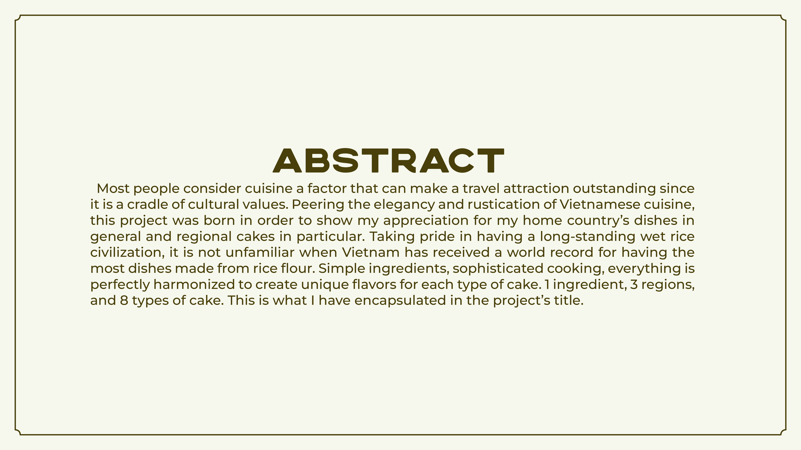
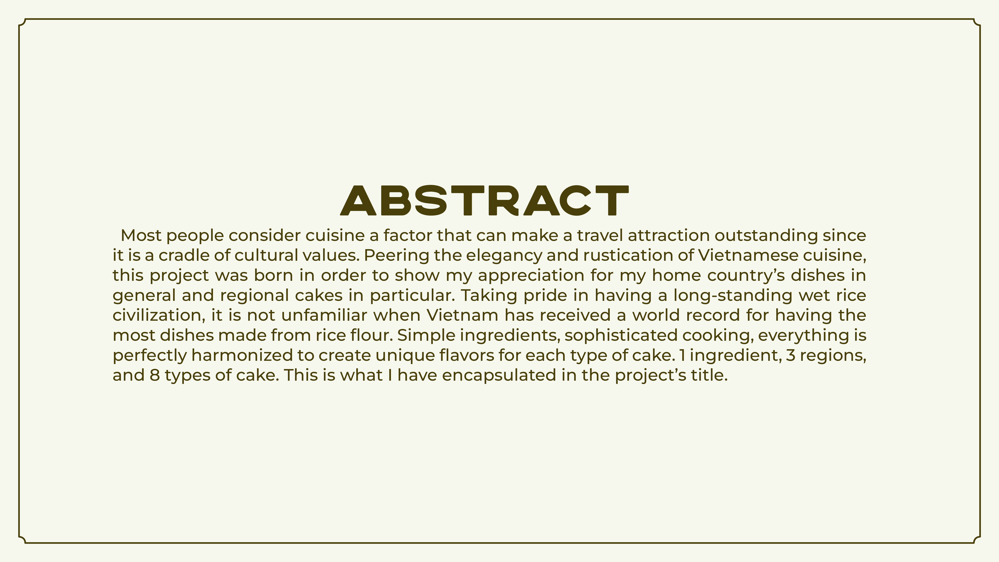

138
Peering the elegancy and rustication of Vietnamese cuisine, this project was born in order
to show my appreciation for regional cakes in particular. Taking pride in having a long-standing wet rice
civilization, it is not unfamiliar when Vietnam has received a world record for having the most dishes made
from
rice flour. Simple ingredients, sophisticated cooking, everything is perfectly harmonized to create unique
flavors for each type of cake. 1 ingredient, 3 regions, and 8 types of cake. This is what I have
encapsulated in
the project's title.


 
